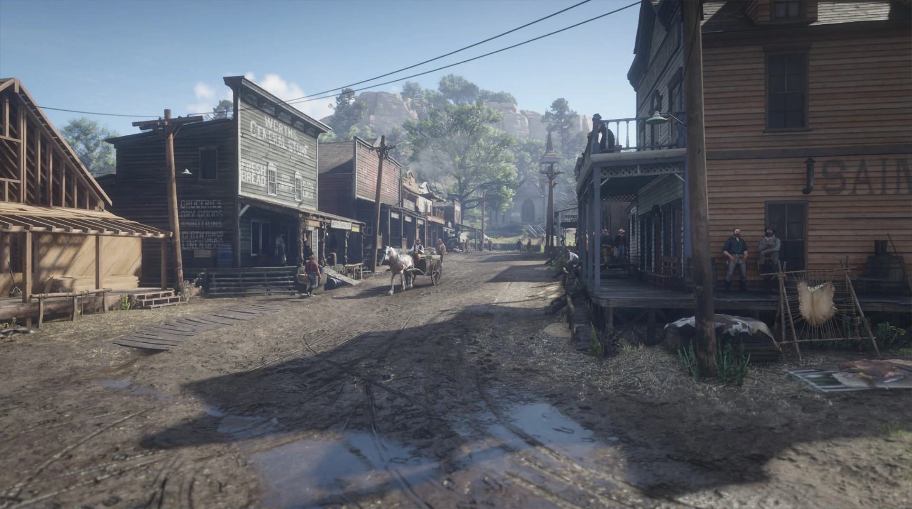
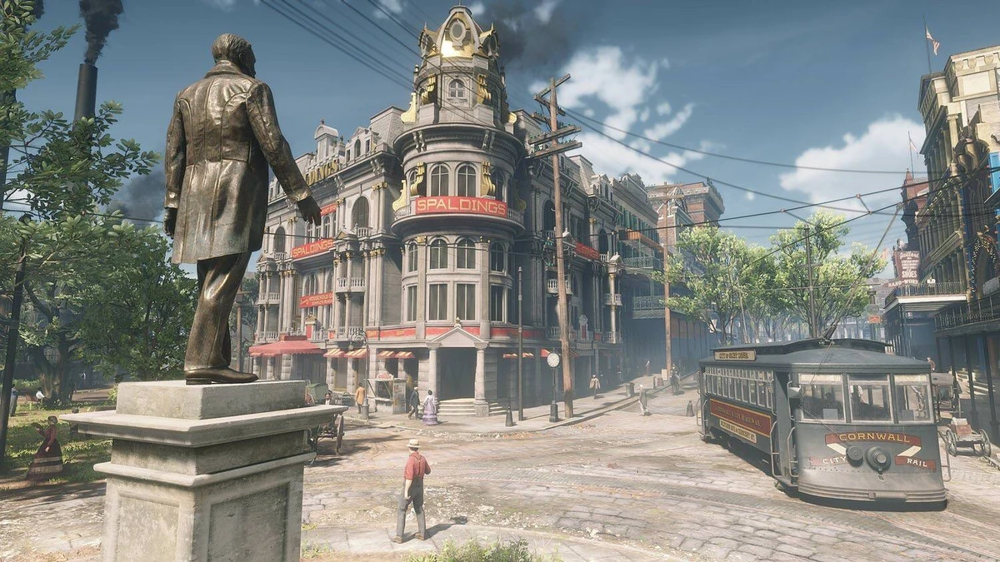

O Mundo Aberto de Red Dead Redemption 2

Valentine é uma cidade situada no coração do estado de New Hanover, no universo de Red Dead Redemption 2. A cidade exibe uma atmosfera rural e movimentada, com um estilo de vida simples e focado no campo. É um lugar onde a tradição e o trabalho árduo são pilares da comunidade. Com sua arquitetura simples, ruas de terra e cercas de madeira, Valentine é uma cidade típica do Velho Oeste, marcada pela presença de saloons e lojas que atendem aos moradores e viajantes.
A cidade é conhecida por ser um centro comercial local, com comerciantes vendendo produtos agrícolas, ferramentas e equipamentos essenciais para a vida no campo. Os cavaleiros, agricultores e caçadores que passam pela cidade fazem dela uma parada estratégica para reabastecimento e descanso. O escritório do xerife e a prisão são marcos importantes, refletindo a lei e a ordem que, apesar de simples, são fundamentais para a região.

Saint Denis é uma cidade situada no estado de Lemoyne, em *Red Dead Redemption 2*. Ao contrário das pequenas cidades do interior, Saint Denis é uma metrópole próspera, com ruas largas, edifícios imponentes e uma arquitetura refinada. Sua atmosfera cosmopolita é marcada pela mistura de culturas, com uma diversidade de pessoas e influências, refletindo a urbanização crescente do final do século XIX.
A cidade é um centro de comércio e cultura, com lojas sofisticadas, teatros, hotéis de luxo e uma variedade de restaurantes. Os edifícios de três ou quatro andares, iluminados por lâmpadas a gás, contrastam fortemente com as pequenas construções rústicas de cidades como Valentine. As ruas de Saint Denis estão sempre movimentadas, com carruagens, pedestres e vendedores ambulantes disputando o espaço.
Saint Denis também é conhecida por seus mercados, onde os moradores compram de tudo, desde frutas frescas até roupas de grife. A cidade, com seu estilo de vida moderno, é um reflexo das grandes mudanças sociais e econômicas que estavam ocorrendo na época. Contudo, por trás de sua fachada sofisticada, a cidade também esconde um lado sombrio, com crimes e corrupções que afligem a região.